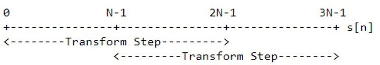
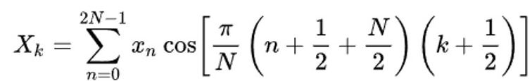
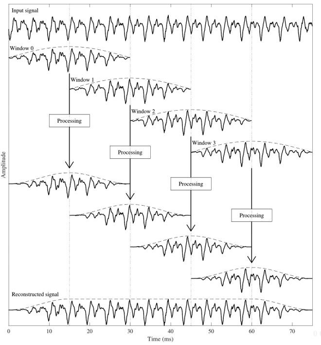
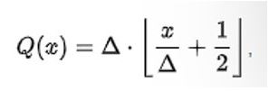
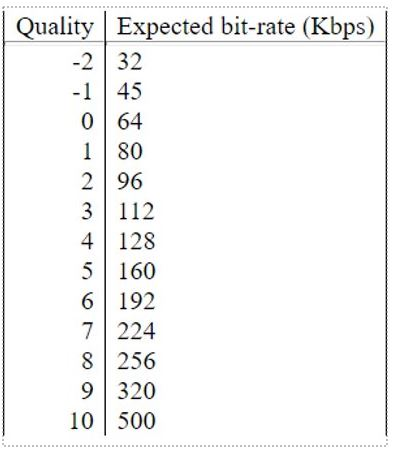
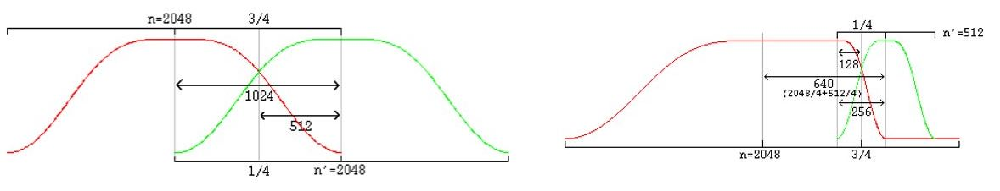
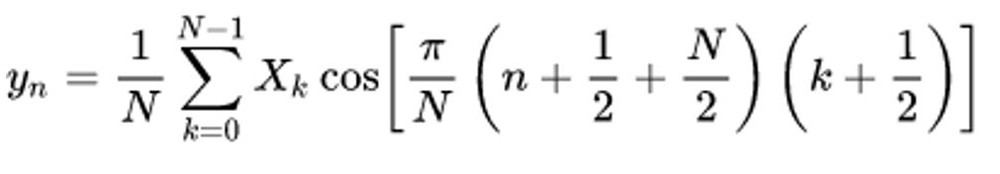

Si quieres esuchar el contenido de ésta página, reproduce lo siguiente:
Definición
Como el formato MP3, es una forma de compresión que reduce algunos de los datos de audio y se denomina
"compresión con pérdida".
Lo que distingue al formato Ogg Vorbis es que es un formato completamente gratuito, abierto y sin patente; a
diferencia de sus competidores principales como el formato MP3 o AAC. Esto significa que el algoritmo de
compresión se puede utilizar libremente por todos los productores de software.
¿Qué es OGG y qué es Vorbis?
Ogg es el nombre del formato contenedor de Xiph.org para audio, video y metadatos. No es solo un códec de
vídeo o de audio, sino que es un contenedor que comprende audio, video y subtítulos
Vorbis es el nombre de un codec ó esquema de compresión de audio con pérdida, que está diseñado para estar
dentro del contenedor Ogg.
¿Quién lo propuso?
El proyecto Ogg Vorbis fue iniciado en 1993 por el programador Chris Montgomery, fundador y director técnico
de la Fundación Xiph.Org
Esta organización es un grupo sin fines de lucro para proteger el contenido multimedia en Internet del
control de intereses privados.
Características
OGG Vorbis admite un mínimo de dos canales y un máximo de 256 canales, y, puede reproducir sonidos en
sistemas que utilizan canales 5.1 o 7.1.
OGG Vorbis tiene mejor calidad de sonido que otros tipos de archivos como MP3.
El archivo comprimido del formato OGG Vorbis es más pequeño que el de MP3.
Mientras que a un mp3 de 128 kbps le tomaría 10.3MB al ogg le tomaría sólo 7.1MB, sin conllevar alguna
pérdida de calidad.
La tasa de bits de compresión en OGG Vorbis es variable, cambia según la necesidad del archivo.
La extensión de nombre de archivo .ogg se usaba para todos los datos cuyos materiales de contenido
usaban el formato de contenedor Ogg. Desde 2007, la Fundación Xiph.Org recomienda que .ogg se utilice
únicamente para datos de audio Ogg Vorbis
Vorbis incluye un campo de comentarios completo y flexible para la información de la canción y el
artista, así como otros datos de la pista. Permite ingresar información de comentarios en el momento de
la codificación. Otras herramientas también permiten ingresar y editar datos de seguimiento.
Reproducir un archivo ogg consume más recursos que reproducir un mp3 lo que puede reducir la duración de
la batería.
Su frecuencia va desde los 8kHz a los 48.0kHz, es polifónico y sus tasas de bits fijas y variables son
de 16 a 128 kbps/canal.
Existen reproductores de audio que no reproducen .ogg, además de que es menos usado que otros formatos
como MP3 o AAC.
(Por algo no existe el reproductor ogg pero sí reproductores MP3)
Calidad y Bitrate
El codificador genera un flujo a una velocidad de bits de 45 a 500 kbit / s, según la calidad elegida.
El coeficiente de calidad es una métrica arbitraria y puede variar de -2 a 10
Mientras más información contiene el .ogg; la calidad es más cercana a la grabación de audio original.
Historia
1993: Inicialmente, el código fuente de Ogg/Vorbis estaba basado en un proyecto anterior iniciado
inicialmente por Christopher Montgomery en 1993.
1998: Se desarrolló el código fuente utilizado en las versiones actuales de Ogg/Vorbis, poco después de
que Fraunhofer decidiera fortalecer su control de MP3 y amenazó con demandar a los proyectos MP3
gratuitos.
2002: La primera versión de códec estable, 1.0, se lanzó el 19 de julio de 2002. Esta versión cumple al
estándar Vorbis I.
Compresión del formato
Los algoritmos de compresión de audio se implementan en el software como Códecs de audio. Tanto en la
compresión con pérdida como en la sin pérdida, se reduce la redundancia de la información
mediante el uso de métodos como la codificación, la cuantificación, la transformación discreta del
coseno y la predicción lineal para reducir la cantidad de información utilizada para representar los
datos sin comprimir.
El codificador de vorbis es únicamente un método para aceptar audio de entrada, dividirlo en tramas
individuales y comprimir estas tramas en "paquetes" sin formato. Luego, el decodificador acepta estos
paquetes sin procesar en secuencia, los decodifica, sintetiza
tramas de audio a partir de ellos y vuelve a ensamblar las tramas en una representación del flujo de
audio original.
Sobre el MDCT con ventana
La trama de audio entrante PCM es dividida en bloques llamados ventanas, lo que se hace para efectos de
reducción del pre-eco producido por la posterior transformación de dominio con MDCT. Vorbis utiliza la
transformada de coseno discreta modificada (MDCT) para convertir datos de sonido del
dominio del tiempo al dominio de la frecuencia. La extensión de las ventanas (N) deben ser una potencia
de dos, conteniendo estas entre 64 y 8192
muestras. Cada paso de transformación ingresa 2N muestras y genera N coeficientes MDCT.

Los coeficientes MDCT de las muestras PCM se definen por esta fórmula: Los 2N números reales X0, ...,
X2N-1 se transforman en los N números reales X0, ..., XN-1

Está determina la correlación entre un conjunto de 2N números (muestras) y N funciones coseno
ortogonales. Por tanto, a la entrada de la MDCT hay 2N muestras, y a la salida, N coeficientes.

Modelo psicoacústico
Vorbis utiliza el modelo psicoacústico humano para descartar información no audible, característica que lo ubica
en el grupo de códec con pérdidas. El modelo proporciona una compresión de señal con pérdida de alta calidad al
describir qué partes de una señal
de audio digital determinada se pueden eliminar de manera segura, es decir, sin pérdidas significativas en la
calidad percibida del sonido. Parte de la psicoacústica se en las limitaciones del oído para percibir el
sonido. Estas limitaciones son:
Límite superior de frecuencia
Umbral de audición
Umbral de dolor: La potencia o intensidad sonora a partir de la cual el sonido produce en el oído
sensación de dolor. Su valor medio se sitúa en torno a los 110-130 dB.
Enmascaramiento temporal
Enmascaramiento frecuencial
Cuantificacion
La cuantificación es básicamente el proceso de disminuir la número de bits requeridos para almacenar valores de
coeficiente por disminuyendo su precisión (por ejemplo, redondeando de tipo flotante a entero). El objetivo
de la cuantificación es disminuir la mayor parte de los coeficientes de alta frecuencia menos
significativos a cero. Por ejemplo, redondear un número real 𝒙 al valor entero más cercano forma un tipo de
cuantificador muy básico:
uno uniforme. Un cuantificador uniforme típico (de la mitad de la banda de rodadura) con un tamaño de paso de
cuantificación igual a algún valor 𝚫 se puede expresar como

donde la notación [ ] denota la función de suelo.
Una función suelo es la función que toma como entrada un número real x, y da como salida el mayor entero menor o
igual que x. El espectro de frecuencia cuantificado se puede considerar como una función de suelo, esta curva
está codificada sin pérdidas y tiene muchos menos datos (coeficientes) e información que el espectro
cuantificado.
Dependiendo de la tasa de bits de salida deseada y la frecuencia , el SAM aplica un paso de cuantificación
diferente a conjuntos de frecuencias de diferente tamaño. Estos son los niveles cuantización disponibles para
Vorbis:

Cuantificacion vectorial: Codificacion Huffman
La cuantificación vectorial (VQ) es una técnica clásica de cuantificación del procesamiento de señales que
permite modelar funciones de densidad de probabilidad mediante la distribución de vectores prototipo.
Originalmente se utilizó para la compresión de datos. Vorbis utiliza la codificación Huffman para comprimir los
datos contenidos en las porciones de suelo y residuos.
La diferencia (residuo) entre la curva de suelo y el espectro cuantificado se codifica con VQ+Huffman (con
pérdidas).
Decodificacion
Una vez completada la codificación Huffman, los datos de la trama se empaquetan en bits en un paquete lógico.
En Vorbis, una serie de estos paquetes siempre va precedida de un encabezado. El encabezado contiene toda la
información necesaria para una decodificación correcta. Esta información incluye un conjunto completo de
libros de códigos, descripciones de métodos para representar el
piso y el residuo, y los modos y asignaciones para soporte multicanal. Vorbis proporciona el formato 'Ogg',
para encapsular paquetes lógicos en flujos de transporte.
La configuración del decodificador consiste en la configuración de múltiples abstracciones de componentes
autónomos que realizan funciones específicas en la canalización de decodificación. Estos son:
Modos: El mecanismo de modo se utiliza para codificar una trama de acuerdo con uno de los múltiples
métodos posibles con la intención de elegir el método que mejor se adapte a ese cuadro. Los diferentes
modos son cómo se cambia el tamaño de una trama de una trama a otra. El número de modo de
una trama sirve como un interruptor de configuración de nivel superior para todos los demás aspectos
específicos de la decodificación de cuadros
Mapeo: Un mapeo contiene una descripción de acoplamiento de canales y una lista de "submapas" que
agrupan conjuntos de vectores de canales para codificación y decodificación agrupadas. Un 'submapa' es
una configuración/agrupación que se aplica a un subconjunto de vectores de suelo y
residuos dentro de un mapeo. Cada submapa especifica el número de instancia de piso y residuo apropiado
para usar para decodificar
los vectores de piso espectral y residuos espectrales de ese submapa.
Piso: Vorbis codifica un vector de "suelo" espectral para cada canal PCM. Este vector es una
representación de baja resolución del espectro de audio para el canal dado en la
trama actual, generalmente utilizado como un filtro de blanqueamiento.
Residuo: El residuo espectral es la estructura fina del espectro de audio una vez que se ha sustraído la
curva de suelo. En términos más simples, se codifica en el flujo de bits mediante cuantificación
vectorial en cascada (pasadas múltiples) de acuerdo con uno de los tres algoritmos de
codificación/empaquetado específicos
numerados del 0 al 2.
Libros de código: A diferencia de prácticamente cualquier otro códec de audio convencional, Vorbis no
tiene un modelo de probabilidad configurado estáticamente, sino que empaqueta toda la configuración de
decodificación de entropía, VQ y Huffman, en el flujo de bits en el tercer encabezado, el encabezado de
configuración del códec. Esta configuración empaquetada consta de varios 'libros de códigos', cada uno
de los cuales contiene una representación específica equivalente a Huffman para decodificar palabras de
código comprimidas, así
como una tabla de búsqueda opcional de valores de vectores de salida a los que se aplica un valor de
Huffman decodificado como compensación, generando la salida decodificada final correspondiente a una
palabra clave comprimida dada.
Antes de que pueda comenzar la decodificación, el decodificador debe inicializarse utilizando los encabezados de
flujo de bits que coinciden con el flujo que se va a decodificar. Vorbis usa tres paquetes de cabecera; todos
son requeridos, en orden, por esta especificación. Una vez
configurado, la decodificación puede comenzar en cualquier paquete de audio que pertenezca al flujo de Vorbis.
Los paquetes de encabezado son:
El encabezado de identificación: Identifica el flujo de bits como Vorbis, la versión Vorbis y las
características de audio simples del flujo, como la frecuencia de muestreo y el número de canales.
Encabezado de comentario: Incluye comentarios de texto del usuario ("etiquetas") y una cadena de
proveedor para la aplicación/biblioteca que produjo el flujo de bits.
Encabezado de configuración: Incluye amplia información de configuración de CODEC, así como los libros
de códigos completos de VQ y Huffman necesarios para la decodificación.
El procedimiento de decodificación y síntesis para todos los paquetes de audio es fundamentalmente el mismo.
Decodificación de tipo de paquete : Vorbis utiliza cuatro tipos de paquete. Los primeros tres tipos
de paquetes marcan cada uno de los tres encabezados Vorbis descritos
anteriormente. El cuarto tipo de paquete marca un paquete de audio. Después de los tres paquetes de
cabecera, todos los paquetes de un flujo de Vorbis I son audio. El primer paso de la decodificación de
paquetes de audio es leer y verificar el tipo de paquete; un
paquete que no es de audio cuando se espera audio indica corrupción de flujo o un flujo no compatible.
El decodificador debe ignorar el paquete y no intentar decodificarlo a audio.
Decodificación de modo: Vorbis permite que un codificador configure múltiples "modos" de paquetes
numerados todos los cuales
pueden usarse en un flujo de Vorbis determinado. El modo se codifica como un número entero que se
utiliza como compensación directa en el índice de
instancia del modo.
Decodificación de forma de ventana (solo ventanas largas): En el caso de una ventana de tamaño
desigual, la forma de la ventana larga debe modificarse para un
solape continuo. Es posible inferir correctamente la forma de la ventana que se aplicará a la ventana
actual conociendo
los tamaños de la ventana actual, anterior y siguiente. Es legal que un decodificador use este método.
Sin embargo, en el caso de una ventana larga (las ventanas cortas no requieren modificación), Vorbis
también codifica dos bits de bandera para especificar la forma anterior y posterior a la ventana.

Decodificación de piso: Cada piso está codificado/decodificado en el orden de los canales; sin embargo,
cada piso pertenece a un "submapa" que especifica qué configuración de piso usar. Todos los pisos se
decodifican antes de que
comience la decodificación de residuos.
Decodificación de residuos: Vorbis codifica vectores de residuos en grupos por submapa; la codificación
se realiza en orden de
submapa desde el submapa 0 hasta el n-1. Esto difiere de los pisos que se codifican utilizando una
configuración proporcionada por el número de submapa, pero se codifican individualmente en el orden de
los canales.
Acoplamiento de canal inverso: El acoplamiento de Vorbis se aplica a pares de vectores de residuos a la
vez; el desacoplamiento se
realiza en el lugar un par a la vez en el orden y utilizando los vectores especificados en la
configuración de mapeo actual. La operación de desacoplamiento es la misma para todos los pares,
convirtiendo la representación polar
cuadrada (donde un vector es la magnitud y el segundo ángulo) de vuelta a la representación cartesiana.
Generar curva de piso:: El decodificador puede optar por generar la curva de piso en cualquier momento
apropiado. Es razonable generar la curva de salida cuando los datos de piso se decodifican del paquete
sin procesar, o se puede generar después del acoplamiento inverso y aplicarlo directamente al residuo
espectral, combinando la generación y el producto escalar en un solo paso y eliminando algo de espacio
de trabajo.
Calcular el producto escalar suelo/residuo: Este paso es sencillo; para cada canal de salida, el
decodificador multiplica la curva de piso y los
vectores de residuos elemento por elemento, produciendo el espectro de audio final de cada canal.
Transformada monolítica inversa: El espectro de audio se vuelve a convertir en audio PCM en el dominio
del tiempo a través de un coseno
discreto modificado inverso (IMDCT). El IMDCT transforma N números reales X0, ..., XN-1 en 2N números
reales y0, ..., y2N-1 según la fórmula:

Superponer/añadir datos: La salida de IMDCT en ventana se superpone y se agrega con los datos de la
derecha de la ventana
anterior, de modo que el punto 3/4 de la ventana anterior se alinea con el punto 1/4 de la ventana
actual (como se ilustra en el diagrama de superposición de ventana). En este punto, los datos de audio
entre el centro del cuadro anterior y el centro del cuadro actual ya
están terminados y listos para ser devueltos.
Caché de datos de la mano derecha: El decodificador debe almacenar en caché la parte de la mano derecha
del cuadro actual para superponerse
con la parte de la mano izquierda del cuadro siguiente.
Devolver datos de audio terminados: La parte superpuesta producida por la superposición de los datos de
la trama anterior y actual son datos
terminados que devolverá el decodificador. Estos datos se extienden desde el centro de la ventana
anterior hasta el centro de la ventana actual. En
el caso de ventanas del mismo tamaño, la cantidad de datos a devolver es medio bloque que consta de y
solo de las partes superpuestas. Cuando se superponen una ventana corta y una larga, gran parte del
rango devuelto no se superpone. Esto
no daña la ortogonalidad de transformación. Sin embargo, preste atención a devolver el rango de datos
correcto; la cantidad de datos a devolver es: